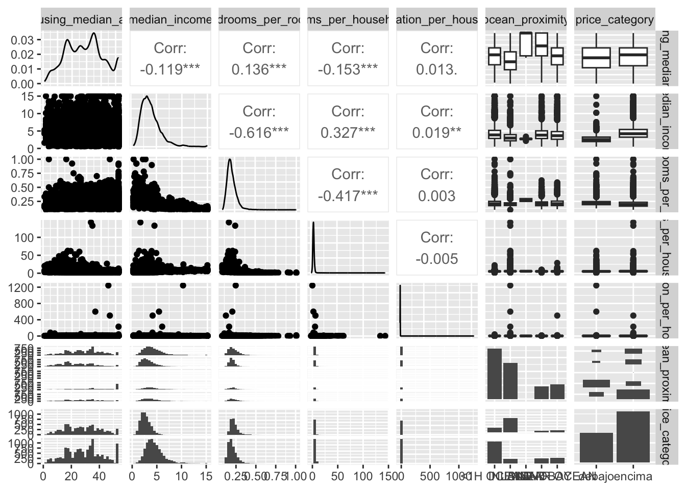
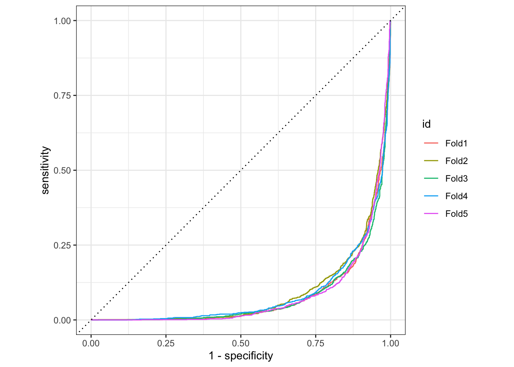
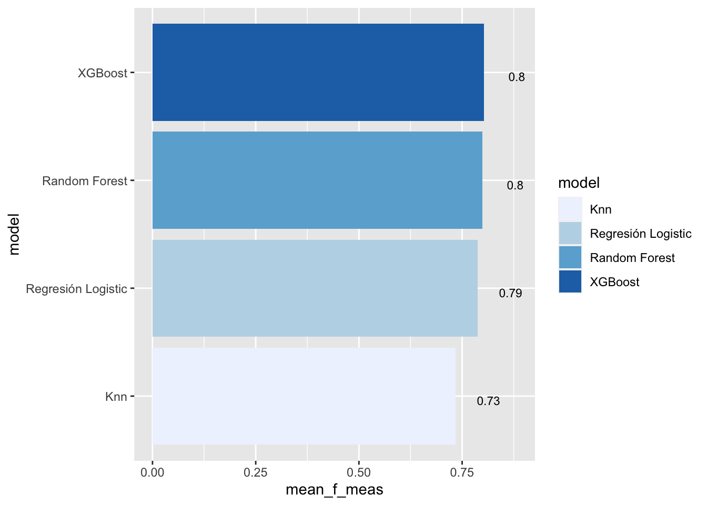

sitio <- "https://raw.githubusercontent.com/kirenz/datasets/master/housing_unclean.csv"
datos_casas <- read_csv(sitio)
datos_casas2 <- read_csv(sitio)Machine Learning
Usaremos en esta ocasión la guia del Profesor Jan Kirenz quien ha abordado ampliamente el uso del paquete de tidymodels para la técnica de Machine Learning.
Algunos paquetes para esta parte
Los paquetes que deben tener presente para que funcione la programación son los siguientes -no olvide que debe usar install.package("")-:
library(tidyverse)
library(gt)
library(GGally)
library(ggmap)
library(tidymodels)
library(janitor)
library(stringr)
library(visdat)
library(xgboost)
library(kknn)
library(ranger)
library(vip)Introducción
Vamos a intentar a partir de una base de datos de la zona de california conocer de sus respectivos precios. Como el tema es de clasificación la idea entonces es mirar si dada ciertas características de la casa, su precio esta por encima o por debajo del precio promedio de la zona. Intentaremos usar la métrica de la mediana como valor mas intermedio para realizar mejor el trabajo y selección.
Objetivo
A manera de trabajo, nos han contratado para mirar de que manera podemos dar una categoría de precios a las distintas casas que tenemos la información. Es imprescindible hacerlo correctamente y una de esa forma o manera es a partir de los modelos de clasificación.
Conozcamos los datos
Lo primero que siempre se debe hacer es conocer los datos con los que se va a trabajar. Esto se puede hacer de distintas formas y maneras, vamos a importar directamente desde una web amiga:
Después de extraídos los datos, podemos mirar entonces su estructura. Para eso miremos un nuevo paquete denominado gt el cual es muy similar al View() que trae de forma nativa el R .
# library(gt)
datos_casas %>%
slice_head(n = 5) %>%
gt()| longitude | latitude | housing_median_age | total_rooms | total_bedrooms | population | households | median_income | median_house_value | ocean_proximity |
|---|---|---|---|---|---|---|---|---|---|
| -122.23 | 37.88 | 41.0years | 880 | 129 | 322 | 126 | 8.3252 | 452600.0$ | NEAR BAY |
| -122.22 | 37.86 | 21.0 | 7099 | 1106 | 2401 | 1138 | 8.3014 | 358500.0 | NEAR BAY |
| -122.24 | 37.85 | 52.0 | 1467 | 190 | 496 | 177 | 7.2574 | 352100.0 | NEAR BAY |
| -122.25 | 37.85 | 52.0 | 1274 | 235 | 558 | 219 | 5.6431 | 341300.0 | NEAR BAY |
| -122.25 | 37.85 | 52.0 | 1627 | 280 | 565 | 259 | 3.8462 | 342200.0 | NEAR BAY |
Si nos concentramos en los detalles, nos daremos cuenta que algunas variables como housing_median_age tiene un carácter no acorde como (years), como también median_house_value quien trae el signo de peso en una de sus casillas. Procedemos entonces a eliminar este tipo de elementos y por ende limpiar la data.
# library(stringr)
datos_casas <-
datos_casas %>%
mutate(
housing_median_age = str_remove_all(housing_median_age, "[years]"),
median_house_value = str_remove_all(median_house_value, "[$]")
)De esta manera hemos hecho un trabajo de limpieza. Es imperioso siempre pensar que este tipo de cosas demandan una gran cantidad de tiempo en las fases iniciales de un proyecto o trabajo.
Utilizamos ahora nuestro amigo glimpse(), con el veremos de forma vertical las variables de la base de datos.
datos_casas %>% glimpse()Rows: 20,640
Columns: 10
$ longitude <dbl> -122.23, -122.22, -122.24, -122.25, -122.25, -122.2…
$ latitude <dbl> 37.88, 37.86, 37.85, 37.85, 37.85, 37.85, 37.84, 37…
$ housing_median_age <chr> "41.0", "21.0", "52.0", "52.0", "52.0", "52.0", "52…
$ total_rooms <dbl> 880, 7099, 1467, 1274, 1627, 919, 2535, 3104, 2555,…
$ total_bedrooms <dbl> 129, 1106, 190, 235, 280, 213, 489, 687, 665, 707, …
$ population <dbl> 322, 2401, 496, 558, 565, 413, 1094, 1157, 1206, 15…
$ households <dbl> 126, 1138, 177, 219, 259, 193, 514, 647, 595, 714, …
$ median_income <dbl> 8.3252, 8.3014, 7.2574, 5.6431, 3.8462, 4.0368, 3.6…
$ median_house_value <chr> "452600.0", "358500.0", "352100.0", "341300.0", "34…
$ ocean_proximity <chr> "NEAR BAY", "NEAR BAY", "NEAR BAY", "NEAR BAY", "NE…Ya con los datos de mejor forma y con ciertas formas que nos permiten familiarizarnos mejor, existe una función que nos permite graficar la estructura anterior
# library(visdat)
datos_casas %>% vis_dat()De esta manera nos damos cuenta que hay variables que deberían ser numéricas (dbl) como lo es cada una de las mediana tanto de housing_media_age y median_house_value, como también la variable de ocean_proximity que en ves de ser tomada como una cadena (chr) deberia ser tratada como factor.
Miremos nuevamente lo siguiente
datos_casas %>%
dplyr::count(ocean_proximity,
sort = TRUE)# A tibble: 5 × 2
ocean_proximity n
<chr> <int>
1 <1H OCEAN 9136
2 INLAND 6551
3 NEAR OCEAN 2658
4 NEAR BAY 2290
5 ISLAND 5Desde luego esta variable de próximidad debe ser nuevamente transformada. Para eso, haremos uso de mutate() del paquete dplyr
# Primera fase con las variables numéricas
datos_casas <-
datos_casas %>%
mutate(
housing_median_age = as.numeric(housing_median_age),
median_house_value = as.numeric(median_house_value)
)
# Segunda fase vamos por la variable categórica
datos_casas <-
datos_casas %>%
mutate(across(where(is.character), as.factor))Vamos por los missing values
Desde luego los datos que uno puede tener, contienen valores perdidos o no digitados. En este caso, podemos observarlas de la siguiente forma
vis_miss(datos_casas, sort_miss = TRUE)La variable de número de habitaciones al parecer tiene ciertos valores perdidos. Otra forma de verlo es
is.na(datos_casas) %>% colSums() longitude latitude housing_median_age total_rooms
0 0 0 0
total_bedrooms population households median_income
207 0 0 0
median_house_value ocean_proximity
0 0 Al parecer 207 observaciones no pudieron estar completas para esto.
EDA
Hagamos otro análisis para esta parte. Podemos desde luego crear nuevas métricas que nos permiten ser mas completos en esto y tener mas info de lo que queremos hallar.
datos_casas <-
datos_casas %>%
mutate(rooms_per_household = total_rooms/households,
bedrooms_per_room = total_bedrooms/total_rooms,
population_per_household = population/households)Desde luego intentar tener nuestra variable categórica
datos_casas <-
datos_casas %>%
mutate(price_category = case_when(
median_house_value < 150000 ~ "debajo",
median_house_value >= 150000 ~ "encima",
)) %>%
mutate(price_category = as.factor(price_category)) %>%
select(-median_house_value)No vamos a usar mas una de las variables como lo es median_house_value, ya que no se hace necesario. Muchas veces esto es conveniente con el objeto de liberar los datos y no tener variables que no vamos a volver a usar.
datos_casas %>%
dplyr::count(price_category, # Conteo
name ="districts_total") %>% # Nombre de la nueva variable
mutate(percent = districts_total/sum(districts_total)) %>%
gt() # Para la tabla| price_category | districts_total | percent |
|---|---|---|
| debajo | 7556 | 0.3660853 |
| encima | 13084 | 0.6339147 |
Podemos también tener nuevas propuestas de tablas en el análisis de las variables de interés. Observemos lo siguiente:
datos_casas %>%
dplyr::count(price_category,
name ="districts_total") %>%
mutate(percent = districts_total/sum(districts_total)*100,
percent = round(percent, 2)) %>%
gt() %>%
tab_header(
title = "Precios medios de la vivienda en California",
subtitle = "Districtos por encima y por debajo de los 150.000$"
) %>%
cols_label(
price_category = "Precio",
districts_total = "Distritos",
percent = "Porcentaje"
) %>%
fmt_number(
columns = vars(districts_total),
suffixing = TRUE
) | Precios medios de la vivienda en California | ||
| Districtos por encima y por debajo de los 150.000$ | ||
| Precio | Distritos | Porcentaje |
|---|---|---|
| debajo | 7.56K | 36.61 |
| encima | 13.08K | 63.39 |
Es una tabla ya traducida y bastante informativa y al parecer se tiene un gran porcentaje de casas que estan por encima del valor mediano del estado.
Esto también lo podemos hacer por medio de variables que son de tipo categórico
datos_casas %>%
dplyr::count(price_category, ocean_proximity) %>%
dplyr::group_by(price_category) %>%
mutate(percent = n / sum(n) *100,
percent = round(percent, 2)) %>%
gt() %>%
tab_header(
title = "Precios medios de la vivienda en California",
subtitle = "Districtos por encima y por debajo de los 150.000$"
) %>%
cols_label(
ocean_proximity = "Proximidad con el Oceano",
n = "Distritos",
percent = "Porcentaje %"
) %>%
fmt_number(
columns = vars(n),
suffixing = TRUE
) | Precios medios de la vivienda en California | ||
| Districtos por encima y por debajo de los 150.000$ | ||
| Proximidad con el Oceano | Distritos | Porcentaje % |
|---|---|---|
| debajo | ||
| <1H OCEAN | 1.52K | 20.13 |
| INLAND | 4.93K | 65.22 |
| NEAR BAY | 452.00 | 5.98 |
| NEAR OCEAN | 655.00 | 8.67 |
| encima | ||
| <1H OCEAN | 7.62K | 58.20 |
| INLAND | 1.62K | 12.40 |
| ISLAND | 5.00 | 0.04 |
| NEAR BAY | 1.84K | 14.05 |
| NEAR OCEAN | 2.00K | 15.31 |
A continuación un gráfico de proporciones
datos_casas %>%
ggplot(aes(price_category, ocean_proximity)) +
geom_bin2d() +
scale_fill_continuous(type = "viridis") Ademas de esto, podemos también hacer y tener un multi-gráfica, donde podemos ver algunas distribuciones y estadísticas de fondo
# library(GGally)
datos_casas %>%
select(
housing_median_age,
median_income, bedrooms_per_room, rooms_per_household,
population_per_household, ocean_proximity,
price_category) %>%
ggpairs()
Si hay deseo porque se vea en colores, se puede entonces optar por lo siguiente:
datos_casas %>%
select(price_category, median_income, bedrooms_per_room, rooms_per_household,
population_per_household) %>%
ggscatmat(color="price_category",
corMethod = "spearman",
alpha=0.2)Un mapa
Siempre y cuando tengamos ejes de latitud y longitud, podemos también hacer gráficas que muestren un poco de mejor forma como estos precios estan en cierta zona.
# library(ggplot)
datos_casas %>%
ggplot(aes(x=longitude, y=latitude))+
geom_point(color= "cornflowerblue")Si queremos mejorar y atraer densidad
# library(ggplot)
datos_casas %>%
ggplot(aes(x=longitude, y=latitude))+
geom_point(color= "cornflowerblue", alpha= 0.1)Un código completo para esta parte es: (se omite por API direct), pero se tendría un mapa muy detallado de las casas
# install.packages("bindrcpp")
# library(ggmap)
qmplot(x = longitude,
y = latitude,
data = datos_casas,
geom = "point",
color = price_category,
size = population,
alpha = 0.4) +
scale_alpha(guide = 'none') Modelos
Vamos a preparar los datos. Siempre es bueno tener una copia de los originales -por si acaso- y luego si trabajar con ellos.
datos_df <-
datos_casas %>%
select( # selección de nuestras variables
longitude, latitude,
price_category,
median_income,
ocean_proximity,
bedrooms_per_room,
rooms_per_household,
population_per_household
)
glimpse(datos_df)Rows: 20,640
Columns: 8
$ longitude <dbl> -122.23, -122.22, -122.24, -122.25, -122.25, …
$ latitude <dbl> 37.88, 37.86, 37.85, 37.85, 37.85, 37.85, 37.…
$ price_category <fct> encima, encima, encima, encima, encima, encim…
$ median_income <dbl> 8.3252, 8.3014, 7.2574, 5.6431, 3.8462, 4.036…
$ ocean_proximity <fct> NEAR BAY, NEAR BAY, NEAR BAY, NEAR BAY, NEAR …
$ bedrooms_per_room <dbl> 0.1465909, 0.1557966, 0.1295160, 0.1844584, 0…
$ rooms_per_household <dbl> 6.984127, 6.238137, 8.288136, 5.817352, 6.281…
$ population_per_household <dbl> 2.555556, 2.109842, 2.802260, 2.547945, 2.181…A continuación podemos comenzar a dividirlos en lo que se denominan los datos de Entrenamiento (Train) y también aquellos que son de Testeo (Testing). Para eso, se debe hacer lo siguiente:
set.seed(12345)
data_div <- initial_split(datos_df, # datos
prop = 3/4,
strata = price_category)
train_data <- training(data_div)
test_data <- testing(data_div)Recipe()
Miramos que nuestros modelos de alguna manera pueden tener transformaciones, la parte correspondiente a recipe() contiene una serie de pasos o steps.
step_novel()convierte todas las variables nominales en factores y se encarga de otras cuestiones relacionadas con las variables categóricas.step_log()transformará los datos en logarítmicos (ya que algunas de nuestras variables numéricas son asimétricas). Tenga en cuenta que este paso no se puede realizar con números negativos.step_normalize()normaliza (centra y escala) las variables numéricas para que tengan una desviación estándar de uno y una media de cero. (es decir, estandarización z).step_dummy()convierte nuestra columna de factores ocean_proximity en variables numéricas binarias (0 y 1).
casas_rec <-
recipe(price_category ~ .,
data = train_data) %>%
update_role(longitude, latitude,
new_role = "ID") %>%
step_log(
median_income,
bedrooms_per_room, rooms_per_household,
population_per_household
) %>%
step_naomit(everything(), skip = TRUE) %>%
step_novel(all_nominal(), -all_outcomes()) %>%
step_normalize(all_numeric(), -all_outcomes(),
-longitude, -latitude) %>%
step_dummy(all_nominal(), -all_outcomes()) %>%
step_zv(all_numeric(), -all_outcomes()) %>%
step_corr(all_predictors(), threshold = 0.7, method = "spearman") Ver en algun orden este proceso, nos lleva a:
summary(casas_rec)# A tibble: 8 × 4
variable type role source
<chr> <list> <chr> <chr>
1 longitude <chr [2]> ID original
2 latitude <chr [2]> ID original
3 median_income <chr [2]> predictor original
4 ocean_proximity <chr [3]> predictor original
5 bedrooms_per_room <chr [2]> predictor original
6 rooms_per_household <chr [2]> predictor original
7 population_per_household <chr [2]> predictor original
8 price_category <chr [3]> outcome originalDespués de todo este Pre-proceso llega la hora de mirar que tienen por dentro
prepped_data <-
casas_rec %>% # Objeto de recipe()
prep() %>% # Fundamental
juice() # Para extraer el data frame
prepped_data %>% glimpse()Rows: 15,323
Columns: 10
$ longitude <dbl> -122.26, -122.27, -122.27, -122.27, -122.27…
$ latitude <dbl> 37.85, 37.85, 37.84, 37.84, 37.84, 37.85, 3…
$ median_income <dbl> -1.03642084, -1.98549968, -1.47831129, -0.9…
$ rooms_per_household <dbl> -0.735672534, -0.502432155, -0.070355184, -…
$ population_per_household <dbl> -0.2631878, -0.5222934, -1.0797829, -0.2853…
$ price_category <fct> debajo, debajo, debajo, debajo, debajo, deb…
$ ocean_proximity_INLAND <dbl> 0, 0, 0, 0, 0, 0, 0, 0, 0, 0, 0, 0, 0, 0, 0…
$ ocean_proximity_ISLAND <dbl> 0, 0, 0, 0, 0, 0, 0, 0, 0, 0, 0, 0, 0, 0, 0…
$ ocean_proximity_NEAR.BAY <dbl> 1, 1, 1, 1, 1, 1, 1, 1, 1, 1, 1, 1, 1, 1, 1…
$ ocean_proximity_NEAR.OCEAN <dbl> 0, 0, 0, 0, 0, 0, 0, 0, 0, 0, 0, 0, 0, 0, 0…Si se quiere observar numéricamente, se puede hacer en algunos eventos:
prepped_data %>%
select(price_category,
median_income,
rooms_per_household,
population_per_household) %>%
ggscatmat(corMethod = "spearman",
alpha=0.2)Por consiguiente podemos entonces empezar a construir los folds. En esto nos podemos demorar un poco
set.seed(200)
cv_folds <-
vfold_cv(train_data,
v = 5,
strata = price_category) # DependienteLlegó la hora de los modelos
Después de organizar nuestros primeros pasos llega la hora de estimar modelos.
Estos son algunos pasos para especificar modelos:
- Establecer el
type - Colocar el
engine - Por último el modo:
regressionoclassification
Haremos uso solo de algunos de ellos
Regresión logistica
log_spec <- # especificacion
logistic_reg() %>% # type
set_engine(engine = "glm") %>% # engine
set_mode("classification") # modeRandom forest
# library(ranger)
rf_spec <-
rand_forest() %>%
set_engine("ranger", importance = "impurity") %>%
set_mode("classification")XGBoost
# library(xgboost)
xgb_spec <-
boost_tree() %>% # type
set_engine("xgboost") %>% # engine
set_mode("classification") # modeVecino Cercano (k-nearest)
knn_spec <-
nearest_neighbor(neighbors = 4) %>% # Puede tomar otros vecinos
set_engine("kknn") %>%
set_mode("classification") Workout (Workflow)
Combinar casi todo (recipe y especificación) requiere de una nueva función que permita hacer combinaciones y terminar de plasmar el modelo final para luego hacer comparaciones idoneas.
# Modelo logístico
log_wflow <- # workflow
workflow() %>% # hacer uso de la function
add_recipe(casas_rec) %>% # usar receta (recipe)
add_model(log_spec) # adherir especificacion
# Modelo de Random Forest
rf_wflow <-
workflow() %>%
add_recipe(casas_rec) %>%
add_model(rf_spec)
# Modelo XGBoost
xgb_wflow <-
workflow() %>%
add_recipe(casas_rec) %>%
add_model(xgb_spec)
# Modelo de Vecinos
knn_wflow <-
workflow() %>%
add_recipe(casas_rec) %>%
add_model(knn_spec)Acceder a cualquiera de ellos es simplemente hacer lo siguiente
knn_wflow # accedemos a ese objeto══ Workflow ════════════════════════════════════════════════════════════════════
Preprocessor: Recipe
Model: nearest_neighbor()
── Preprocessor ────────────────────────────────────────────────────────────────
7 Recipe Steps
• step_log()
• step_naomit()
• step_novel()
• step_normalize()
• step_dummy()
• step_zv()
• step_corr()
── Model ───────────────────────────────────────────────────────────────────────
K-Nearest Neighbor Model Specification (classification)
Main Arguments:
neighbors = 4
Computational engine: kknn Evaluación
Ahora si!!, después de tantas opciones, podemos mirar la luz al final del túnel
log_res <-
log_wflow %>%
fit_resamples(
resamples = cv_folds,
metrics = metric_set(
recall, precision, f_meas,
accuracy, kap,
roc_auc, sens, spec),
control = control_resamples(
save_pred = TRUE)
)
rf_res <-
rf_wflow %>%
fit_resamples(
resamples = cv_folds,
metrics = metric_set(
recall, precision, f_meas,
accuracy, kap,
roc_auc, sens, spec),
control = control_resamples(save_pred = TRUE)
)
xgb_res <-
xgb_wflow %>%
fit_resamples(
resamples = cv_folds,
metrics = metric_set(
recall, precision, f_meas,
accuracy, kap,
roc_auc, sens, spec),
control = control_resamples(save_pred = TRUE)
)
knn_res <-
knn_wflow %>%
fit_resamples(
resamples = cv_folds,
metrics = metric_set(
recall, precision, f_meas,
accuracy, kap,
roc_auc, sens, spec),
control = control_resamples(save_pred = TRUE)
) Con la combinación y obtención de los indices de cada modelo en la parte de accuracy, precision, sensibilidad, curvas de tipo ROC podemos extraer coeficientes. Pero para eso se hace necesario hacer uso de una funcion o formula que nos permita extraer valores de la lista
get_model <- function(x) {
pull_workflow_fit(x) %>% tidy()
}
# LO MISMO DE ANTES!! PERO
log_res_2 <-
log_wflow %>%
fit_resamples(
resamples = cv_folds,
metrics = metric_set(
recall, precision, f_meas,
accuracy, kap,
roc_auc, sens, spec),
control = control_resamples(
save_pred = TRUE,
extract = get_model) # Acá usamos la función
) Vamos a tener entonces lo siguiente:
log_res_2$.extracts[[1]]# A tibble: 1 × 2
.extracts .config
<list> <chr>
1 <tibble [8 × 5]> Preprocessor1_Model1Pero aun mas precisos
log_res_2$.extracts[[1]][[1]][[1]]
# A tibble: 8 × 5
term estimate std.error statistic p.value
<chr> <dbl> <dbl> <dbl> <dbl>
1 (Intercept) 2.05 0.0514 39.8 0
2 median_income 1.88 0.0460 40.9 0
3 rooms_per_household -0.220 0.0361 -6.11 1.02e- 9
4 population_per_household -0.453 0.0291 -15.6 1.05e-54
5 ocean_proximity_INLAND -2.89 0.0725 -39.8 0
6 ocean_proximity_ISLAND 11.3 143. 0.0791 9.37e- 1
7 ocean_proximity_NEAR.BAY -0.553 0.0962 -5.75 8.68e- 9
8 ocean_proximity_NEAR.OCEAN -0.734 0.0865 -8.49 2.04e-17De los distintos modelos, obtenemos el mejor candidato, para la parte de los logísticos. Si a pesar de todo se quiere ser ambicioso(a), llega la hora de extraer de la siguiente forma
todos_coef <- map_dfr(log_res_2$.extracts, ~ .x[[1]][[1]])
filter(todos_coef, term == "median_income")# A tibble: 5 × 5
term estimate std.error statistic p.value
<chr> <dbl> <dbl> <dbl> <dbl>
1 median_income 1.88 0.0460 40.9 0
2 median_income 1.88 0.0458 41.1 0
3 median_income 1.83 0.0451 40.6 0
4 median_income 1.88 0.0465 40.4 0
5 median_income 1.89 0.0467 40.5 0Si de igual manera desea mirar y constatar los indicadores o métricas de lo que ha obtenido, una forma de hacerlo es:
log_res %>% collect_metrics(summarize = TRUE)# A tibble: 8 × 6
.metric .estimator mean n std_err .config
<chr> <chr> <dbl> <int> <dbl> <chr>
1 accuracy binary 0.848 5 0.00236 Preprocessor1_Model1
2 f_meas binary 0.788 5 0.00456 Preprocessor1_Model1
3 kap binary 0.670 5 0.00593 Preprocessor1_Model1
4 precision binary 0.808 5 0.00236 Preprocessor1_Model1
5 recall binary 0.768 5 0.00934 Preprocessor1_Model1
6 roc_auc binary 0.918 5 0.00248 Preprocessor1_Model1
7 sens binary 0.768 5 0.00934 Preprocessor1_Model1
8 spec binary 0.895 5 0.00245 Preprocessor1_Model1Matriz de confusión
Ahora nos corresponde observar que tan bien predice el modelo. Para eso guardamos los resultados del mejor modelo y predecimos \hat{y}_i
log_pred <-
log_res %>%
collect_predictions()
log_pred# A tibble: 15,480 × 7
id .pred_class .row .pred_debajo .pred_encima price_category .config
<chr> <fct> <int> <dbl> <dbl> <fct> <chr>
1 Fold1 debajo 11 0.790 0.210 debajo Preprocesso…
2 Fold1 debajo 12 0.807 0.193 debajo Preprocesso…
3 Fold1 debajo 25 0.985 0.0154 debajo Preprocesso…
4 Fold1 encima 27 0.469 0.531 debajo Preprocesso…
5 Fold1 debajo 33 0.994 0.00567 debajo Preprocesso…
6 Fold1 debajo 35 0.970 0.0300 debajo Preprocesso…
7 Fold1 debajo 43 0.867 0.133 debajo Preprocesso…
8 Fold1 debajo 51 0.543 0.457 debajo Preprocesso…
9 Fold1 debajo 53 0.565 0.435 debajo Preprocesso…
10 Fold1 encima 60 0.492 0.508 debajo Preprocesso…
# ℹ 15,470 more rowsVamos por la matrix
log_pred %>%
conf_mat(price_category, .pred_class) Truth
Prediction debajo encima
debajo 4352 1032
encima 1315 8781Y vemos lo que termina haciendo nuestro modelo. Es de creer que si queremos los estimadores de los otros modelos, debemos repetir el proceso.
log_pred %>%
conf_mat(price_category, .pred_class) %>%
autoplot(type = "mosaic")Si desea un mapa de calor
log_pred %>%
conf_mat(price_category, .pred_class) %>%
autoplot(type = "heatmap")Testeo en ROC
Ahora vamos por la ROC, esta va ser de la siguiente forma
log_pred %>%
group_by(id) %>% # id es quien contiene los folds
roc_curve(price_category, .pred_encima) %>%
autoplot()
Recuerda en clases lo de las distribuciones, pues una manera de tenerlas es:
::: {.cell}
log_pred %>%
ggplot() +
geom_density(aes(x = .pred_encima,
fill = price_category),
alpha = 0.5)::: {.cell-output-display} ::: :::
Vemos que hay cierta brecha entre ellas.
Comparación definitiva
Tener cada uno de los modelos es tarea titanica. Pero para hacer un gran comparativo, vamos a mirar lo siguiente:
log_metrics <-
log_res %>%
collect_metrics(summarise = TRUE) %>%
mutate(model = "Regresión Logistic") #
rf_metrics <-
rf_res %>%
collect_metrics(summarise = TRUE) %>%
mutate(model = "Random Forest")
xgb_metrics <-
xgb_res %>%
collect_metrics(summarise = TRUE) %>%
mutate(model = "XGBoost")
knn_metrics <-
knn_res %>%
collect_metrics(summarise = TRUE) %>%
mutate(model = "Knn")
# Dataframe con todos los modelos
model_compare <- bind_rows(
log_metrics,
rf_metrics,
xgb_metrics,
knn_metrics,
)
# Cambiar estructura
model_comp <-
model_compare %>%
select(model, .metric, mean, std_err) %>%
pivot_wider(names_from = .metric, values_from = c(mean, std_err))
# Solo uno de los indices
model_comp %>%
arrange(mean_f_meas) %>%
mutate(model = fct_reorder(model, mean_f_meas)) %>% # orden de resultados
ggplot(aes(model, mean_f_meas, fill=model)) +
geom_col() +
coord_flip() +
scale_fill_brewer(palette = "Blues") +
geom_text(
size = 3,
aes(label = round(mean_f_meas, 2), y = mean_f_meas + 0.08),
vjust = 1
)
Pero si en cuestion de ROC nos queremos quedar
# Media debajo la curva AUC
model_comp %>%
arrange(mean_roc_auc) %>% # Pendientes acá
mutate(model = fct_reorder(model, mean_roc_auc)) %>%
ggplot(aes(model, mean_roc_auc, fill=model)) +
geom_col() +
coord_flip() +
scale_fill_brewer(palette = "Blues") +
geom_text(
size = 3,
aes(label = round(mean_roc_auc, 2), y = mean_roc_auc + 0.08),
vjust = 1
)Asumamos que el mejor modelo de todos es Random Forest.
Importancia de variables
Lo haremos con el paquete vip. Pero antes vamos a capturar las predicciones de nuestro gran modelo. Debemos estimarlo
perfect_fit_rf <- last_fit(rf_wflow,
split = data_div,
metrics = metric_set(
recall, precision, f_meas,
accuracy, kap,
roc_auc, sens, spec)
)
perfect_fit_rf %>%
collect_metrics()# A tibble: 8 × 4
.metric .estimator .estimate .config
<chr> <chr> <dbl> <chr>
1 recall binary 0.779 Preprocessor1_Model1
2 precision binary 0.823 Preprocessor1_Model1
3 f_meas binary 0.800 Preprocessor1_Model1
4 accuracy binary 0.858 Preprocessor1_Model1
5 kap binary 0.690 Preprocessor1_Model1
6 sens binary 0.779 Preprocessor1_Model1
7 spec binary 0.903 Preprocessor1_Model1
8 roc_auc binary 0.927 Preprocessor1_Model1Miramos cual variable es mas importante para ayudarlo a predecir
perfect_fit_rf %>%
pluck(".workflow", 1) %>%
pull_workflow_fit() %>%
vip(num_features = 10)Desde luego tenemos dos variables que permiten o inciden muchisimo para decir que el precio de la vivienda este por encima del precio promedio.
Acá su matriz de confusión
perfect_fit_rf %>%
collect_predictions() %>%
conf_mat(price_category, .pred_class) %>%
autoplot(type = "heatmap")Desde luego no podemos dejar atrás su ROC
perfect_fit_rf %>%
collect_predictions() %>%
roc_curve(price_category, .pred_encima) %>%
autoplot()Agradecimientos
Todo el material expuesto acá es del Profesor Jan Kirenz. Gracias a su contenido, se pudo exponer esta parte.
Bibliografía
Un libro que contiene de esto y mucho mas es Tidybook(Tidymodels)